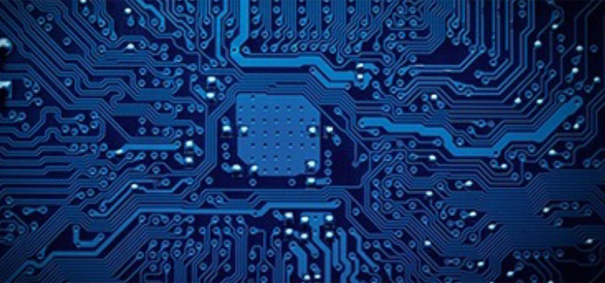

自动化系统能利用智能电子装置控制动力。 我们的发动机功能强劲，技术先进。为了提供最佳的效率、可靠性、安全性和环保特性，发动机不仅需要动力，而且还需要具备智能电子管理装置。 我们利用现代发动机管理系统处理对硬件的控制和监控，以实现完美的性能，实现动力和精确度的结合。
自动化系统

自动化系统能利用智能电子装置控制动力。 我们的发动机功能强劲，技术先进。为了提供最佳的效率、可靠性、安全性和环保特性，发动机不仅需要动力，而且还需要具备智能电子管理装置。 我们利用现代发动机管理系统处理对硬件的控制和监控，以实现完美的性能，实现动力和精确度的结合。